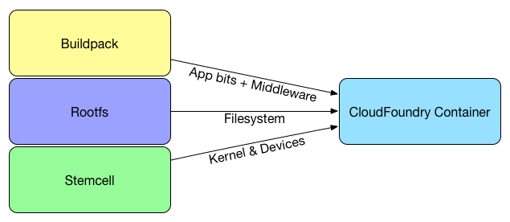

Cloud Foundry
A perspective for Large Dev Teams.
Agenda
- Educational goals
- Current Java scenario
- What is Cloud Foundry?
- CF Architecture
- The deployment process
- Demos:
- Java EE: JSP
- Java Vert-x3: Spring Cloud
- Node.js + Express: Express
- Conclusions
- References
Educational Goals
- Introduction to three layers of Cloud Computing
- The importance of a Private Cloud on a Corporation
- Discover the state of art on Commercial PaaS
- Introduction to BOSCH & StemCell
- Introduction to Cloud Foundry
- Application servers vs the Containerless approach
- Learn to use the quote: "Divide & Conquer"
Current Java scenario
- Large JEE applications run on Application Servers
- Several projects has a coupled design with the services
- It is difficult to upgrade JDK
- Every teams use the same programming language
Current Java scenario
- Application servers included features not used by mayority of users.
- Configuration is not easy
What is Cloud Foundry?
Cloud Foundry is an open source cloud computing platform as a service (PaaS) originally developed by VMware and now owned by Pivotal Software - a joint venture by EMC, VMware and General Electric.
The three layers of Cloud Computing
- SaaS: Software as Service
- PaaS: Platform as Service
- IaaS: Infrastructure as Service
What is a PAAS?

What is BOSCH?
BOSH is a project that unifies release engineering, deployment, and lifecycle management of small and large-scale cloud software. BOSH can provision and deploy software over hundreds of VMs.
What is a StemCell?
A stemcell is a versioned Operating System image wrapped with IaaS specific packaging.
A typical stemcell contains a bare minimum OS skeleton with a few common utilities pre-installed, a BOSH Agent, and a few configuration files to securely configure the OS by default.
What is a Microservice?
“Loosely coupled service oriented architecture with bounded contexts”.
- No, it’s not SOA circa 2004, even though there are some similar concepts, as the implementation is quite different.
- Loose coupling, meaning that you can deploy code whenever you want to and not have to ask anyone first.
- Domain Driven Design is key to separating things. You cannot have multiple representations of the same domain object.
CF Architecture

CF Router
The router routes incoming traffic to the appropriate component, usually the Cloud Controller or a running application on a DEA node.

Note: At the moment, it only supports http ports (80/443)
Cloud Controller
The Cloud Controller provides REST API endpoints for clients to access the system. The Cloud Controller manage the following concepts:
- Organizations, OrganizationQuota, Spaces & SpacesQuota
- Stacks, Buildpacks & Apps
- Routes & Domains
- Services, Service Bindings, Service Instances, Service Plans & User provided Services
- Events
Demo: https://api.run.pivotal.io/v2/info
Droplet Execution Agent
- Manage Warden containers: The DEA stages applications and runs applications in Warden/Garden containers.
- Stage applications: When a new application or a new version of an application is pushed to Cloud Foundry, the Cloud Controller selects a DEA from the pool of available DEAs to stage the application. The DEA uses the appropriate buildpack to stage the application. The result of this process is a droplet.
- Run droplets: A DEA manages the lifecycle of each application instance running in it, starting and stopping droplets upon request of the Cloud Controller.
Service Broker

The deployment process
Exist 2 ways to deploy apps:
- Using Buildpacks
- Using Docker containers
REST API: http://apidocs.cloudfoundry.org/228/apps/creating_an_app.html
Buildpacks
Buildpacks provide framework and runtime support for your applications. Buildpacks typically examine user-provided artifacts to determine what dependencies to download and how to configure applications to communicate with bound services.
Docker
A Docker image consists of two things: a collection of layers to download and mount (the raw bits that form the file system) and metadata that describes what command should be run, as what user, and in what environment (the ENTRYPOINT and CMD directives, among others, specified in the Dockerfile).
Docker
A Docker image consists of two things: a collection of layers to download and mount (the raw bits that form the file system) and metadata that describes what command should be run, as what user, and in what environment (the ENTRYPOINT and CMD directives, among others, specified in the Dockerfile).
References
- https://en.wikipedia.org/wiki/Cloud_Foundry
- https://github.com/cloudfoundry/gorouter
- https://docs.cloudfoundry.org/concepts/security.html
- https://blog.pivotal.io/pivotal-cloud-foundry/products/open-standards-in-cloud-foundry-identity-services
- https://docs.cloudfoundry.org/concepts/architecture/execution-agent.html
- http://biarca.io/technologies/cloud-foundry/
- http://www.activestate.com/blog/2014/09/cloud-foundry-diego-explained-onsi-fakhouri